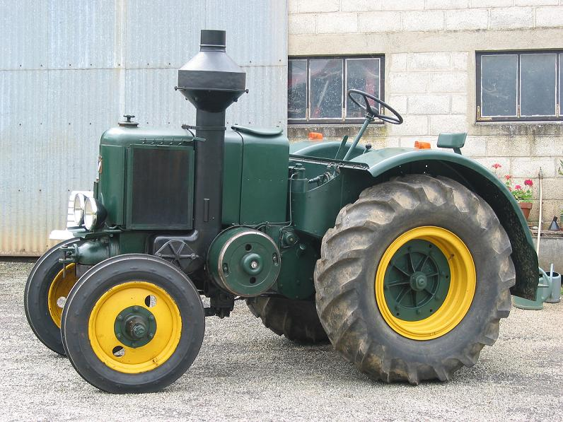
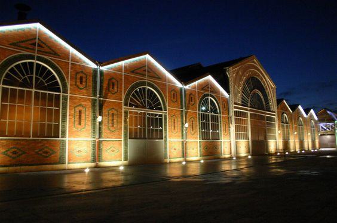

LE SFV HV2
Bienvenu sur ma page perso ! Vous voici sur la page qui me fait plaisir ! Et pour cause, elle parle d'un
sujet qui me tient à coeur. Le SFV HV2. Un tracteur qui faisait partie de la gamme des tracteurs semi diesel
de la célèbre usine qui se trouve ici à Vierzon.
Dans cette page vous trouverez l'histoire de ce tracteur, d'ou il
est venu, quel était son utilité, son principe de fonctionnement. Vous y rencontrerez Mr Gérard,
l'inventeur, partit de rien pour en arriver des années plus tard, à la création de l'usine d'ou est sortie
mon tracteur. Enfin, plutôt le tracteur de mon grand père...
Vous y trouverez aussi la quasi totalité de
la gamme des SFV, du petit "super 204" en passant par le 403, le 303, l'étrange CGM, mais en passant aussi
par le rarissime 552 qui n'aurait été produit qu'à 82 unités...
Bref, je vous souhaite une bonne lecture, un bon voyage au travers de ces lignes, images et vidéos qui, je
l'espère, vous rendront étonnés de ce qu'il se faisait dans ces années là...
MENU
LE HV2

Construit de 1940 à 1944 en première version et de 1947 à 1950 dans la deuxième version, le H V 2 conserve le
moteur du H 2, sa transmission reçoit une boite cinq vitesses avant et une arrière.
La deuxième version quant à elle, reçoit la nouvelle couleur vert foncé Vierzon.
Environ 1600 tracteurs H V 2, ont été fabriqués par la S F V
CARACTERISTIQUES TECHNIQUES
Un beau bébé comme ça, n'est ce pas? Alors histoire de vous donner une idée plus précise de ses dimensions et un peu plus, je vous ai fait un petit tableau qui reprent les données technique générales
|
MOTEUR |
Monocylindre à plat 2 temps semi diesel |
|
CYLINDREE |
5350 cm³ |
|
REGIME MOTEUR |
De 700 à 800tr/m |
|
PUISSANCE À LA POULIE |
25 à 30 CV |
|
PUISSANCE AU CROCHET |
15 CV |
|
VITESSES |
5 AV et 1 AR |
|
PNEUS |
AV 5.50x20 / AR 10x28 |
|
POIDS |
2T230 |
|
LONGUEUR |
2m98 |
|
LARGEUR |
1m63 |
|
COULEUR |
Vert clair puis vert foncé (2em version) |
|
LIEU DE FABRICATION |
Vierzon (18) |
Voilà, vous pouvez maintenant je pense, vous imaginer ce à quoi ressemble un hv2
PRINCIPE DE FONCTIONNEMENT
Bon, c'est bien tout ça, c'est joli (enfin je trouve perso hein 😅), mais vu son poids, comment fait t'il pour se déplacer?
Il se déplace par magie !!! bon des fois ça marche, des fois ça marche pas aurait dit Garcimore...
Non, plus sérieusement, dans cette partie, je vous explique le principe du fonctionnement du moteur des SFV.
A noter que ce principe n'est valable que pour les monocylindre...CQFD
Le piston est en point mort bas.
Les gaz d’échappement sont évacués en E poussé par l’air frais
entrant
par A lumière de balayage,stocké sous pression en C.
La forme du sommet du piston P évite le mélange
des
deux fluides.
Dès que le piston revient vers l’avant, dans la chambre B, le carburant est injecté
par I.
Dans cette chambre séparée du cylindre le carburant arrive sur une masse chaude dite "boule chaude" où
Il se vaporise alors et se mélange à l’air. Les clapets S laissent rentrer l’air dans C venant du filtre
à
air.
Le piston compresse l’air aprés avoir obstrué les lumières E et A . La pression en plus de la chaleur de
la
boule (environs 600°), produit l’explosion du mélange lorsque le piston arrive au point mort haut.
Le temps moteur commence par le recul du piston, qui va compressé l’air dans C les clapets S se
refermant. Les lumières E puis A vont être de nouveaux ouvertes et le cycle recommence.
On a donc un système trés simple sans soupapes et autres culbuteurs.
Mais comme une animation vaut mieux que de longs discourts, je vous montre l'explication avec ceci:
Vous pouvez voir le mouvement du piston en rotation dans la chemise en détail
Et le même mouvement du piston, dans son ensemble.
Tout ceci ne peut fonctionner qu'à une condition... Que la boule soit chaude donc.
Le système de démarrage à boule chaude est appelé ainsi à cause de sa forme: tous les tracteurs
motorisés par le moteur semi-diesel à deux temps à boule chaude possèdent à l’avant une protubérance de
forme sphérique.
Elle est très épaisse, généralement en acier au nickel et fixée sur la culasse, face à l’injecteur.
Non refroidie, la boule chaude a une température comprise entre 500°C et 600°C continuellement, car elle
est maintenue à ces T° par la combustion du carburant.
Elle est la partie visible de la culasse, qui, quant à elle, est refroidie par la chambre à eau qui
l'entoure.
Une fois chauffée à l’aide d’une lampe de chauffe, c’est le combustible contenu dans cette boule qui
permet le démarrage du tracteur.
Au contact de la boule chaude, le combustible subit des modifications chimiques qui lui permettent alors
de s’enflammer spontanément malgré le faible taux de compression du moteur.
Voilà, vous savez maintenant comment démarre et fonctionne ce type de tracteur dit "à boule
chaude"
L'ESPLANADE DE LA SFV
Bâtis à la fin du XIXème siècle, les bâtiments industriels de l’ancienne Société Française(chaînes de
montage de matériels agricoles tels que les tracteurs de la Société de Fabrication Vierzonnaise (SFV)),
d’une surface totale couverte de 18 000 m², ont cessé d’abriter toute activité en décembre 1995.
Ils ont été acquis par la Ville de Vierzon.
Le bâtiment construit sur les techniques "Eiffel", a été inscrit à l’inventaire supplémentaire des
monuments historiques, par arrêté préfectoral en date du 08 mars 1999.
Le site a été ensuite pris en charge par la Communauté de Communes lors de sa création
La Société française de matériel agricole et industriel (SFMAI), devenue Société française de Vierzon
(SFV), est l'entreprise française créée le 15 octobre 1847 par Célestin Gérard à Vierzon, le pionnier
français du machinisme agricole.
La fabrication reste longtemps artisanale. La société se spécialise dans la fabrication de locomobiles à
vapeur et de batteuses.
En 1878, Célestin Gérard détient 225 médailles d'or, 85 d'argent et 6 grandes médailles et diplômes
d'honneur. Le 28 mars de la même année, n'ayant pas d'héritier capable de reprendre la société, il vend
ses ateliers à Lucien Arbel, pour former la SFMAI en 1889.
La société fabrique à partir des années 1930 des tracteurs agricoles inspirés du type Lanz allemand.
Leur moteur lent accepte toute sorte de carburants économiques, tels que les huiles de récupération.
En 1959, la société américaine Case rachète la SFMAI et la production de matériel de travaux publics
remplace progressivement celle du matériel agricole.